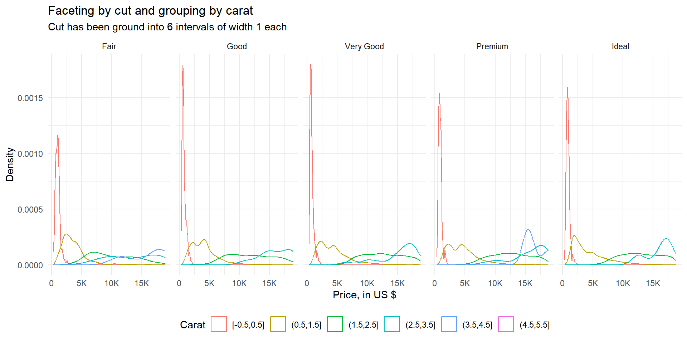
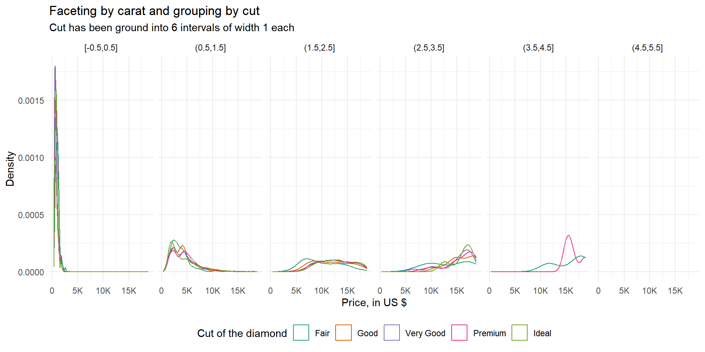
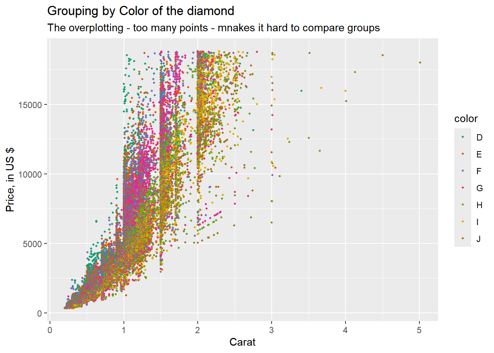
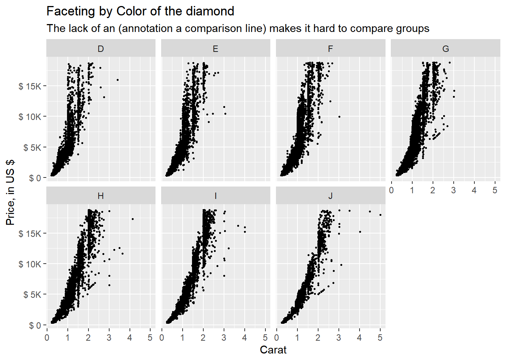
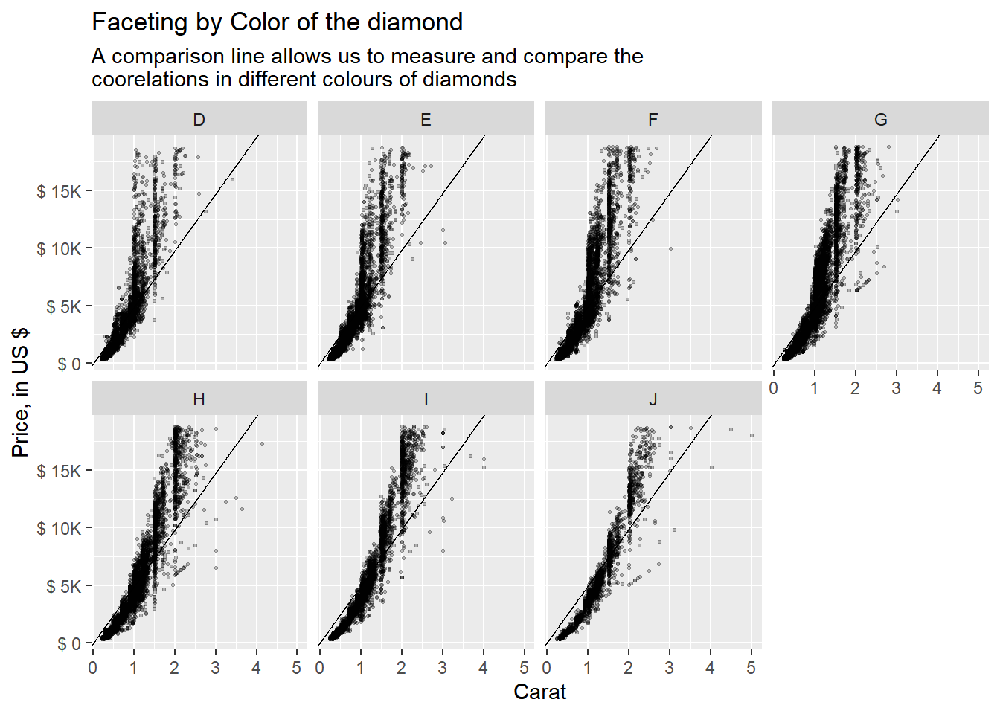
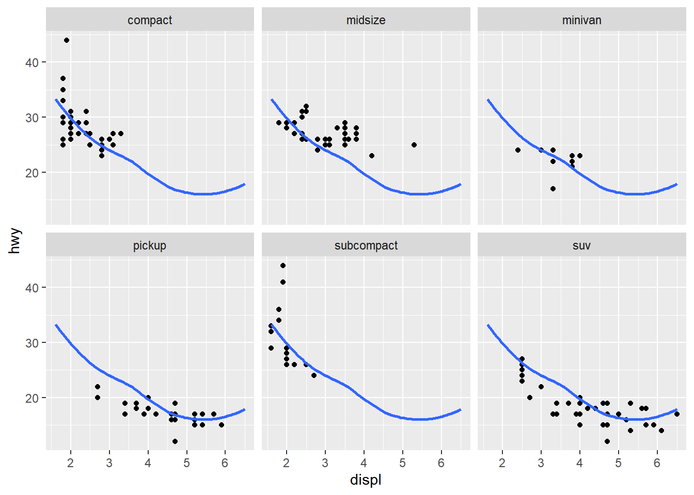

Code
library(tidyverse)
library(gt)
library(scales)Faceting
Aditya Dahiya
March 27, 2024
Diamonds: display the distribution of price conditional on cut and carat. Try faceting by cut and grouping by carat. Try faceting by carat and grouping by cut. Which do you prefer?
The Figure 1 shows the output of both grouping and faceting by cut and carat respectively. As we can see in Figure 1 (a), the better option out of the two is faceting by cut and grouping by carat.
diamonds |>
mutate(carat = cut_width(carat, 1)) |>
ggplot(aes(price, group = carat, colour = carat)) +
geom_density() +
facet_grid( ~ cut) +
theme_minimal() +
scale_x_continuous(
labels = scales::label_number(scale_cut = scales::cut_short_scale())
) +
guides(
colour = guide_legend(nrow = 1)
) +
theme(legend.position = "bottom",
axis.text.x = element_text(angle = 0)) +
labs(title = "Faceting by cut and grouping by carat",
subtitle = "Cut has been ground into 6 intervals of width 1 each",
x = "Price, in US $",
y = "Density",
colour = "Carat")
diamonds |>
mutate(carat = cut_width(carat, 1)) |>
ggplot(aes(price, group = cut, colour = cut)) +
geom_density() +
facet_grid( ~ carat) +
theme_minimal() +
scale_x_continuous(
labels = scales::label_number(scale_cut = scales::cut_short_scale())
) +
guides(
colour = guide_legend(nrow = 1)
) +
scale_color_brewer(palette = "Dark2") +
theme(legend.position = "bottom",
axis.text.x = element_text(angle = 0)) +
labs(title = "Faceting by carat and grouping by cut",
subtitle = "Cut has been ground into 6 intervals of width 1 each",
x = "Price, in US $",
y = "Density",
colour = "Cut of the diamond")

Diamonds: compare the relationship between price and carat for each colour. What makes it hard to compare the groups? Is grouping better or faceting? If you use faceting, what annotation might you add to make it easier to see the differences between panels?
The Figure 2 shows the use of grouping (Figure 2 (a)) and faceting (Figure 2 (b)) in comparing the relationship of price and carat for each colour of the diamonds. Using grouping, as shown in Figure 2 (a), leads to over-plotting and makes it nearly impossible to compare across different colours. Using faceting, as shown in Figure 2 (b), we can compare the correlations, but there is no common line with which we can easily compare the panels.
Thus, we can add an annotation of an A-B line using geom_abline() with slope of mean(price) / mean(carat), as shown in Figure 2 (c), to make it easier to compare the relationship between price and carat for each colour, and even compare across colours.
diamonds |>
ggplot(aes(x = carat, y = price, color = color, group = color)) +
geom_point(size = 0.75) +
scale_color_brewer(palette = "Dark2") +
labs(x = "Carat", y = "Price, in US $",
title = "Grouping by Color of the diamond",
subtitle = "The overplotting - too many points - mnakes it hard to compare groups")
diamonds |>
ggplot(aes(x = carat, y = price)) +
geom_point(size = 0.5) +
facet_wrap(~ color, nrow = 2) +
scale_y_continuous(labels = label_number(scale_cut = cut_short_scale(),
prefix = "$ ")) +
labs(x = "Carat", y = "Price, in US $",
title = "Faceting by Color of the diamond",
subtitle = "The lack of an (annotation a comparison line) makes it hard to compare groups")
slope_var = mean(diamonds$price, na.rm = T) / mean(diamonds$carat, na.rm = T)
diamonds |>
ggplot(aes(x = carat, y = price)) +
geom_point(size = 0.5, alpha = 0.25) +
geom_abline(slope = slope_var) +
facet_wrap(~ color, nrow = 2) +
scale_y_continuous(labels = label_number(scale_cut = cut_short_scale(),
prefix = "$ ")) +
labs(x = "Carat", y = "Price, in US $",
title = "Faceting by Color of the diamond",
subtitle = "A comparison line allows us to measure and compare the\ncoorelations in different colours of diamonds")


Why is facet_wrap() generally more useful than facet_grid()?
The facet_wrap() and facet_grid() are both used for creating multiple plots (facets) based on one or more categorical variables. The choice between them depends on the structure of your data and the specific visualization goals.
Here are some reasons why facet_wrap() might be considered more useful than facet_grid() in certain situations:
Automatic Layout: facet_wrap() automatically determines the layout of the facets based on the number of levels in the faceting variable. This means you don’t need to specify the number of rows or columns, making it more convenient, especially when you have many levels in the faceting variable.
Single Variable Faceting: If you only have one categorical variable to facet by, facet_wrap() is generally more concise to use than facet_grid(), which requires specifying rows and columns even if you only have one variable.
Variable Number of Panels: If the number of levels in the faceting variable varies across different subsets of your data, facet_wrap() adapts to this variability by adjusting the layout accordingly. facet_grid() requires specifying the number of rows and columns, which might not be flexible enough for varying data.
Free Scales: facet_wrap() can be used to create plots with different scales for each facet (e.g., free y-axis scales), which can be useful for comparing distributions across groups without being constrained by a single scale. facet_grid() does not provide this feature directly.
Non-Rectangular Grids: If your facets don’t form a regular grid (e.g., if you want to arrange them in a circular or irregular pattern), facet_wrap() allows for more flexibility in arranging the facets compared to facet_grid().
However, facet_grid() has its own advantages, such as allowing you to facet by multiple variables simultaneously, and providing more control over the layout of the facets.
In summary, facet_wrap() is generally more useful when you have a single categorical variable to facet by, and you want a flexible layout that adapts to the number of levels in that variable. It’s particularly handy when dealing with a variable number of panels or when you want free scales across facets.
Recreate the following plot. It facets mpg2 by class, overlaying a smooth curve fit to the full dataset.
The code shown below recreates the figure in Figure 3. The clever trick to use is that the faceting variable (class) of mpg2 dataset can be set to NULL , i.e. removed to form another data.frame mpg3 . This exploits the fact that ggplot2 uses a missing faceting variable to be represented in each facet of the plot. Thus, there is a common smooth line across facets.
